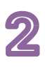

 에서 모둠별로 나타낸 띠그래프와 원그래프를 보고 알 수 있는 내용을 이야기해 봅시다.
우리 모둠이 나타낸
띠그래프를 살펴보면
친구에게 듣고 싶어 하는 말 중
비율이 가장 높은 것은
‘같이 놀자’야.
우리 모둠이 나타낸
원그래프를 살펴보면
학교생활에 대한 만족도 중
‘매우 만족’의 비율이 가장 높아.
우리 모둠이 나타낸 띠그래프에서는 학교생활에서 중요하게 생각하는 점 중 ‘친구 관계’의 비율이 가장 높습니다.
입력타입토글
리셋
제출